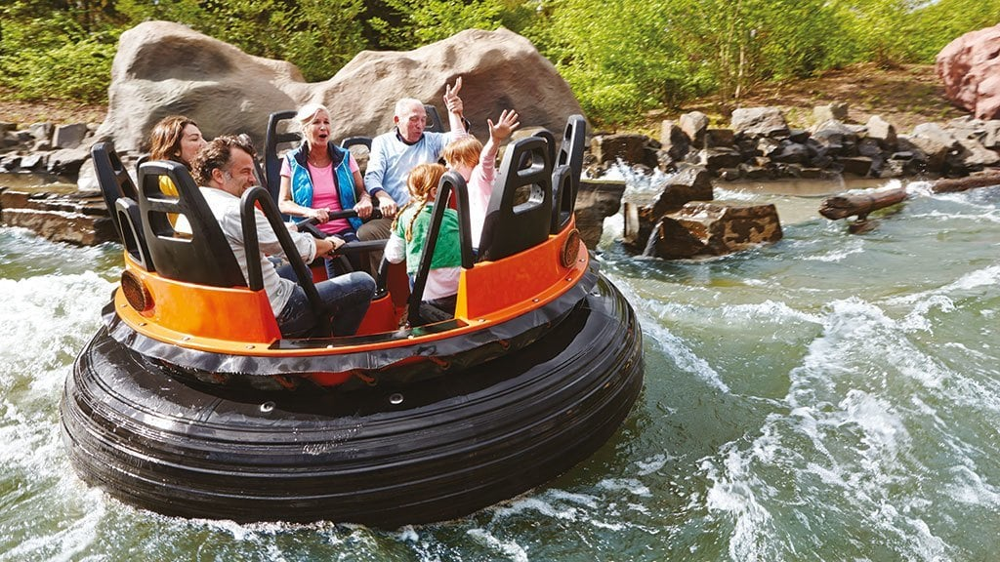

Diep binnen de grenzen van het attractiepark ontvouwt zich een immersieve reis door een surrealistische wereld.
Gasten nemen plaats in een geavanceerd voertuig en zweven door uitgestrekte droomlandschappen, bevolkt door
intrigerende mythologische wezens en weelderige, fantastische flora. Deze ervaring is doordrenkt van meeslepende
lichteffecten en verfijnde muzikale composities, die samen een symfonie van betovering creëren. Elk aspect van deze
betoverende odyssee onthult een nieuwe laag van verbeelding, waarbij elke bocht en wending een diepere onderdompeling
in een onwerkelijke realiteit belooft. Het resultaat is een complex samenspel van kunst, technologie en narratieve finesse
dat de grenzen tussen realiteit en droom doet vervagen voor een publiek dat op zoek is naar een hoogstaande en gelaagde
themaparkervaring.

Binnen de omgeving van een kleurrijk waterlandschap nodigt een avontuurlijke attractie bezoekers uit voor een
opwindende reis. Stap aan boord van robuuste vaartuigen en laat je meevoeren op kabbelende stromen en draaikolken,
terwijl spattend water en lachende gezichten de atmosfeer vullen. Deze waterattractie combineert de sensatie van een
wildwaterbaan met de charme van een natuurlijke omgeving, waarbij onverwachte wendingen en spannende momenten zorgen
voor een memorabele ervaring. Een enerverende tocht vol verrassingen, geschikt voor waaghalzen op zoek naar een
verfrissend avontuur in de buitenlucht.
In het hart van een opwindend avonturenpark bevindt zich een intrigerende achtbaan die de moedigsten
uitdaagt met zijn indrukwekkende stalen sporen en spannende bochten. De rit begint met een langzame klim
naar grote hoogten, waarna de passagiers worden gelanceerd in een razendsnelle afdaling, gevolgd door scherpe
bochten die de zwaartekracht tarten. Het grommen van de metaalachtige structuur vult de lucht terwijl de karretjes
zich wagen aan loopings en kurkentrekkers, waardoor een adrenaline-pompende ervaring ontstaat voor degenen die op zoek
zijn naar een echte sensatie. Met zijn imposante ontwerp en opwindende wendingen is deze attractie een onvergetelijke
reis voor liefhebbers van snelheid en opwinding.